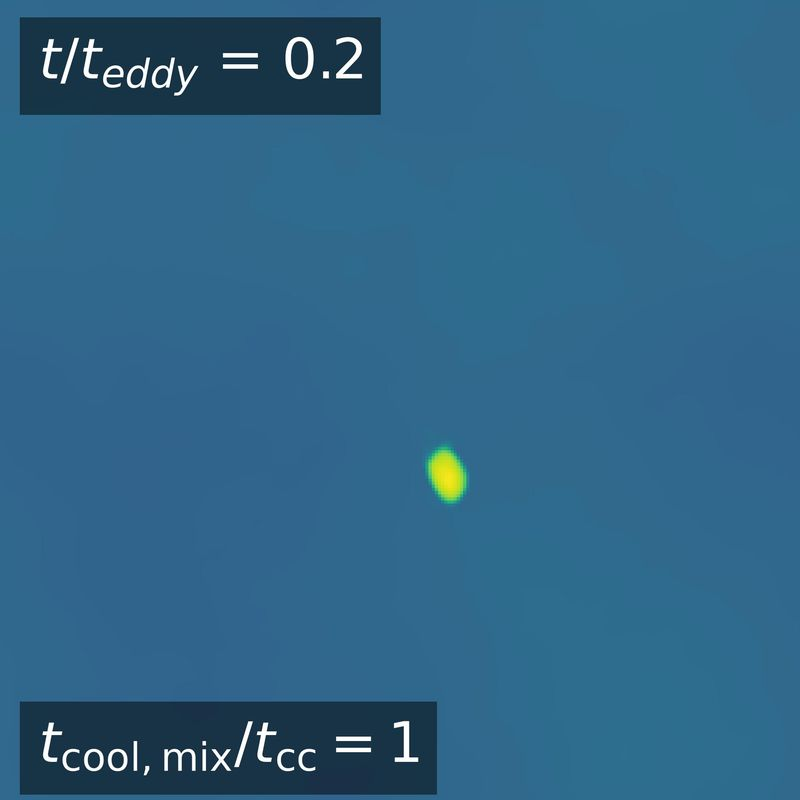
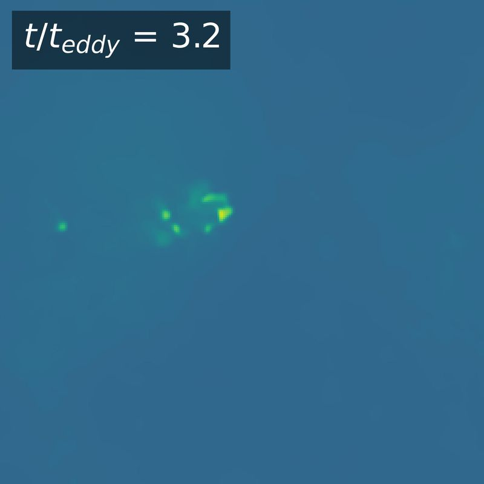
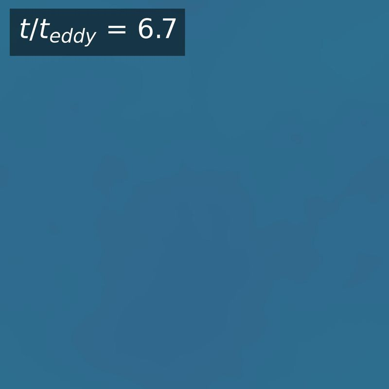
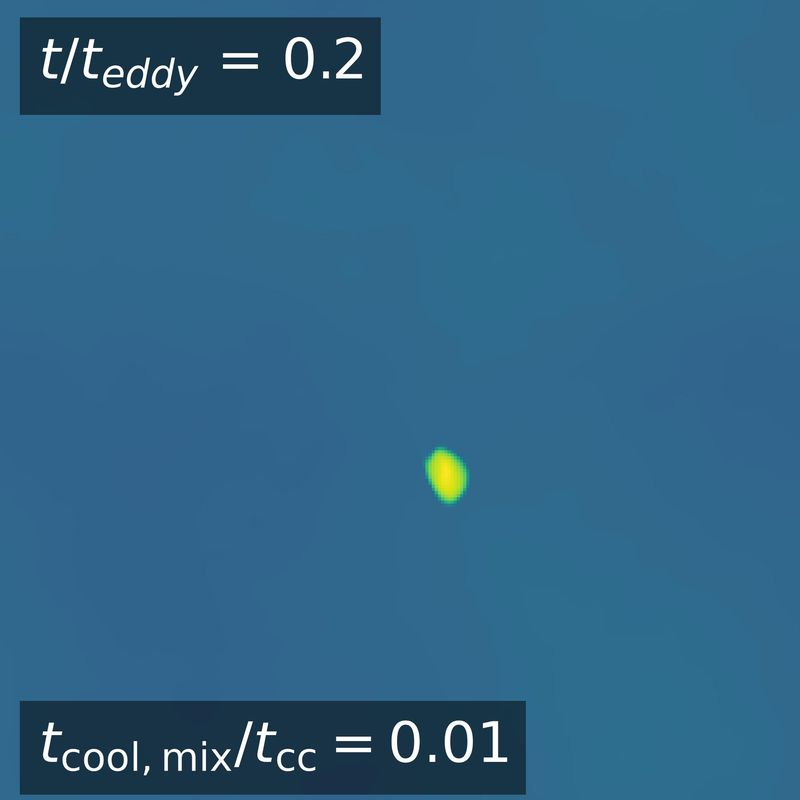
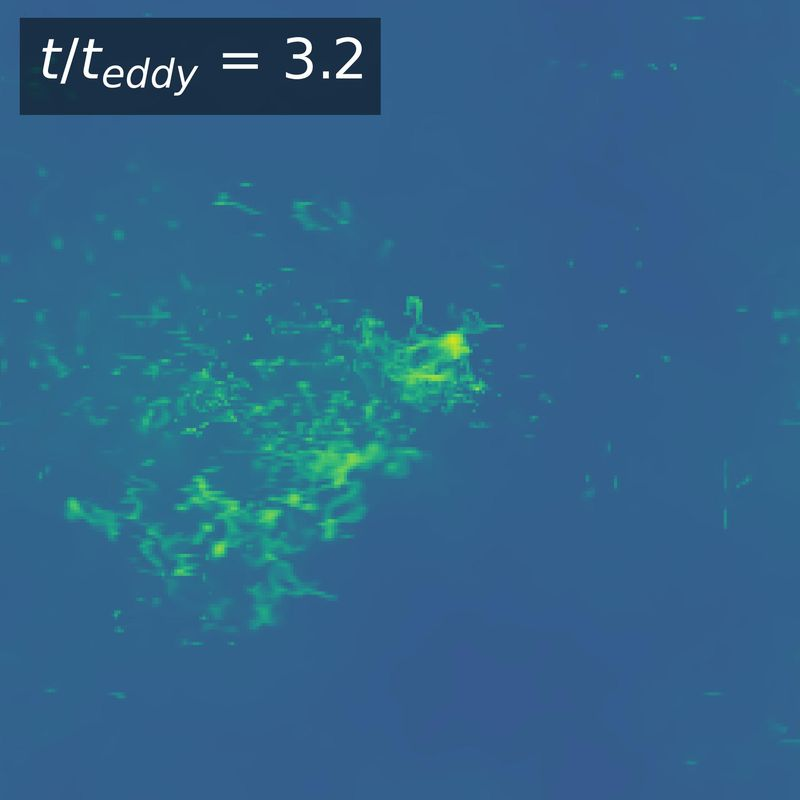
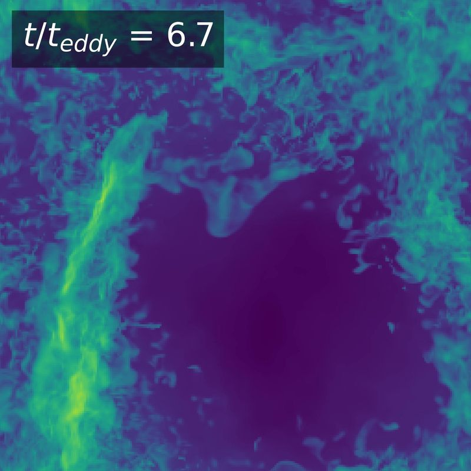
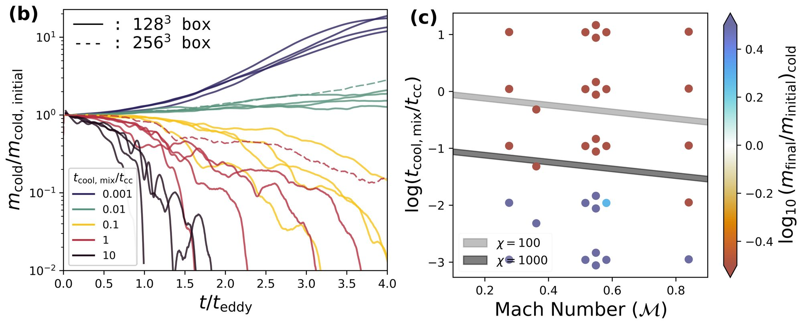

Cold clouds in hot, turbulent gas
Galaxy clusters are filled with gas at tens of millions of degrees that is constantly being stirred, yet they also hold much colder gas. A cold cloud dropped into this hot, turbulent medium tends to be torn apart. But if the gas mixing at its edge cools quickly enough, the cloud can survive and even grow by pulling hot gas onto itself.
Earlier work on clouds about 100 times denser than their surroundings found that they survive when the mixed gas cools faster than the cloud is crushed, roughly when tcool,mix/tcc is below 1. Clusters are hotter, so I ran 33 three-dimensional Athena++ simulations of clouds 1000 times denser than their surroundings, with turbulent Mach numbers from 0.25 to 0.75 and tcool,mix/tcc from 0.001 to 10.
Two clouds compared over time






Projected gas density from two of the runs; brighter means denser. Time is measured in eddy turnover times of the turbulence.
Clouds only survived when tcool,mix/tcc was about 0.01 or less, far below the boundary of about 1 expected from the lower-density case. Denser clouds in hot, turbulent gas have to cool much faster to survive. One likely reason is that the turbulence never dies down, so the cloud never gets a quiet, low-shear region where mixed gas can collect and cool.
